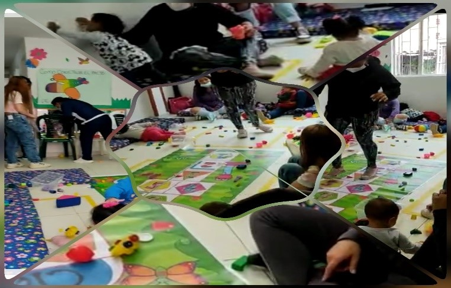

La literatura en la educación inicial juega un papel relevante, puesto que definirá su comunicación escrita, aparte de ser la herramienta esencial para cimentar la personalidad de las niñas y niños, Se quiere llevar a la práctica que las familias se comprometan a incluir en su entorno como la literatura , expresiones artísticas y la exploración del medio, estableciendo vínculos afectivos con pares y adultos significativos, diferentes a los de su familia, a relacionarse con el ambiente natural, social y cultural,que es fundamental en el estudio frente a los pilares de educación inicial, como estrategia didáctica para la enseñanza de la literatura en la primera infancia.

La literatura como juego
La importacia de la literatura para el bien de los infantes

La interaccion del juego entre padres e hijos
Fortalecer los lazos presentes en la familia es una forma de bienestar

Vinculos en la familia
Los vinculos unen a todas las familias.